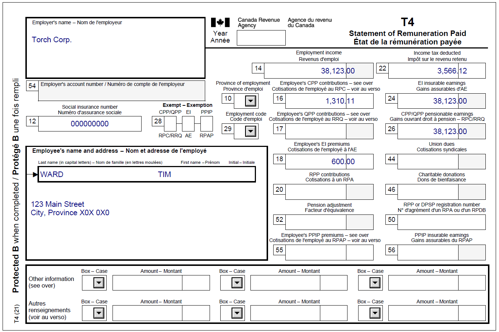
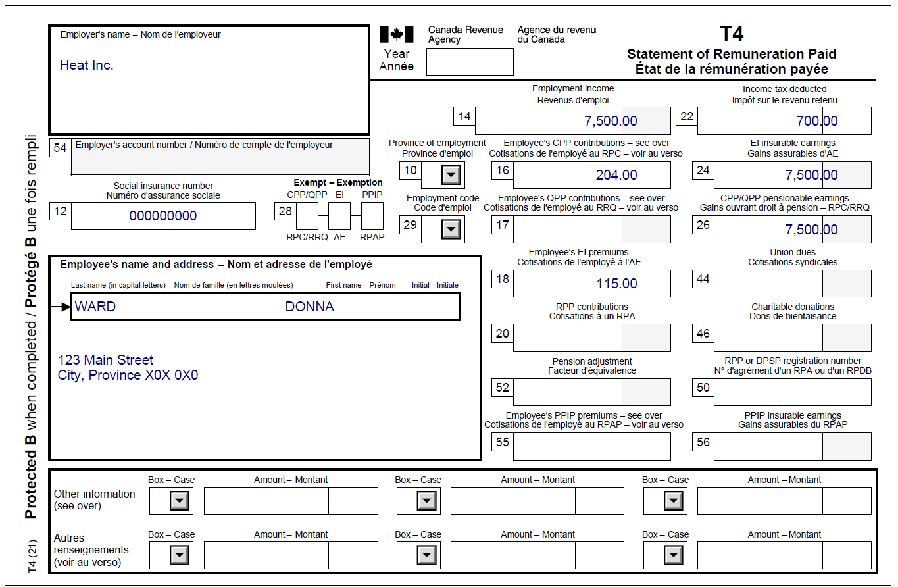

Reporting amounts transferred from spouse
Pre-test question
That's correct
To receive the benefits and credits they are entitled to, each spouse must file their own tax return every year, even if they have no income to report.
Sorry, that's incorrect
To receive the benefits and credits they are entitled to, each spouse must file their own tax return every year, even if they have no income to report.
Instructions
- Open the tax software
- Review the Background information and Required slips (tax slips, receipts, etc.)
- Provide all required information for the appropriate sections of the tax software
- Once completed, compare your results with the solution provided
- Afterwards, refer to the Takeaway points
Background information
Situation
Tim and Donna are married and filing their income tax returns. They both have working income.
Identification information
| Name | Tim Ward |
|---|---|
| Social insurance number (SIN) | 000 000 000 |
| Address | 123 Main Street City, Province X0X 0X0 |
| Date of birth (DOB) | August 8, 1956 |
| Marital status | Married to: Donna Ward on June 7, 1986 SIN: 000 000 000 DOB: June 13, 1953 |
Required slips
T4 – Statement of Remuneration Paid (for Tim)
Text version of the T4 slip
T4 – Statement of Remuneration Paid
Protected B
Employer’s name: Torch Corp.
Employee’s name and address:
Last name: Ward
First name: Tim
123 Main Street
City, Province X0X 0X0
Box 12: Social insurance number: 000 000 000
Box 14: Employment income – line 10100: 38,123.00
Box 16: Employee’s CPP contributions – line 30800: 1,310.11
Box 18: Employee’s EI premiums – line 31200: 600.00
Box 22: Income tax deducted – line 43700: 3,566.12
Box 24: EI insurable earnings: 38,123.00
Box 26: CPP/QPP pensionable earnings: 38,123.00
T4 – Statement of Remuneration Paid (for Donna)
Text version of the T4 slip
T4 – Statement of Remuneration Paid
Protected B
Employer’s name: Heat Inc.
Employee’s name and address:
Last name: Ward
First name: Donna
123 Main Street
City, Province X0X 0X0
Box 12: Social insurance number: 000 000 000
Box 14: Employment income – line 10100: 7,500.00
Box 16: Employee’s CPP contributions – line 30800: 204.00
Box 18: Employee’s EI premiums – line 31200: 115.00
Box 22: Income tax deducted – line 43700: 700.00
Box 24: EI insurable earnings: 7,500.00
Box 26: CPP/QPP pensionable earnings: 7,500.00
Review your results
Solutions will be available in February 2023 as printable PDF.
Takeaway points
Steps to follow
- Review their background information and required slips
- Click Add spouse next to the Family Head (Tim) tab
- Select Complete information (recommended) from the drop-down menu when answering the question What information will you provide for your spouse? in the Spouse interview type section
- Complete the Interview with Tim before starting Donna’s Interview
- The tax software automatically calculates and claims the spouse or common-law partner amount (30300) and amounts transferred from your spouse or common-law partner (32600) when applicable
The individual may be able to reduce their federal tax to zero by claiming all or part of certain amounts that their spouse or common-law partner qualifies for but does not need to use towards reducing their own federal tax to zero.
In this case, Donna was eligible for the Age amount on line 30100 of her tax return, but had no federal tax to pay. Since this is an amount that may be transferred to a spouse or common-law partner, the tax software automatically transfers the unused portion to Tim on line 32600, Amounts transferred from your spouse or common-law partner to help reduce his federal tax.
For more information refer to UFile instructions.